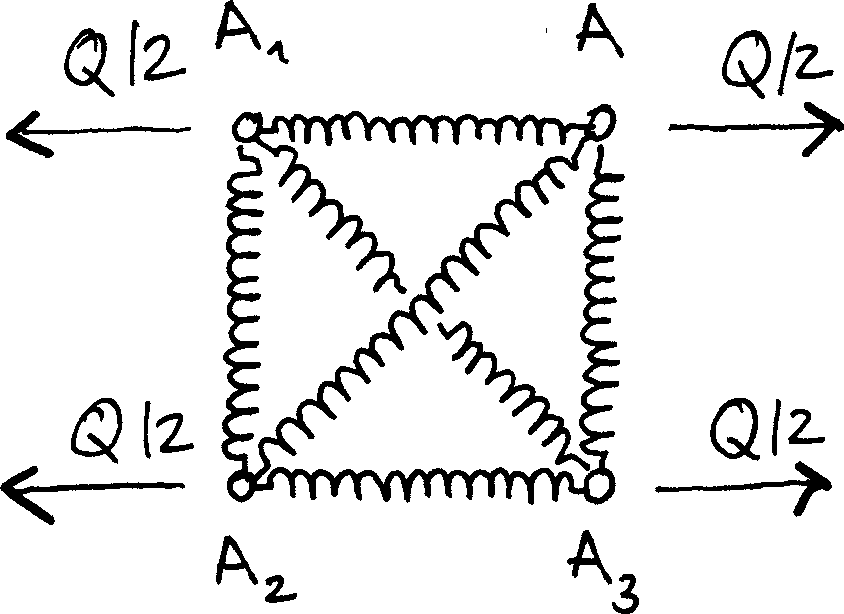
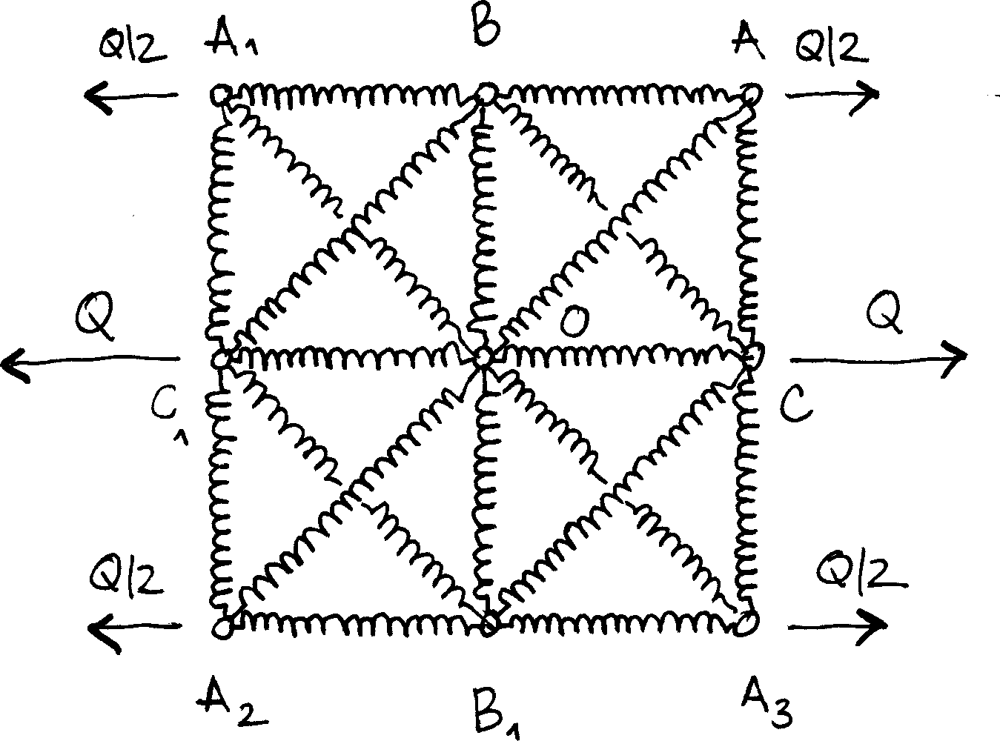
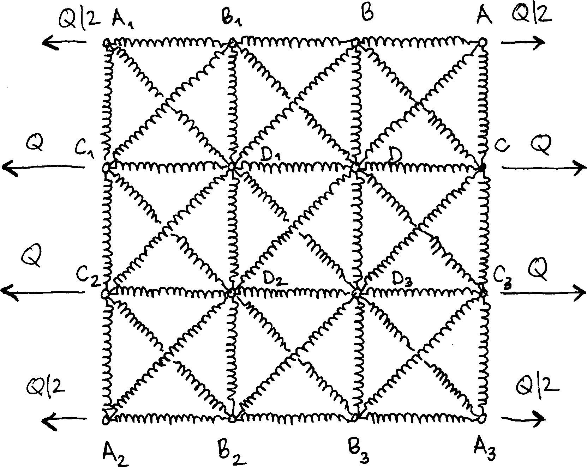

import numpy as np
import sympyIn this post, we compute symbolic expressions of the apparent stiffness introduced in this post. Our goal is to find the solution to the general problem depicted below.
1 Outline of the derivation
We consider a simplified case, where the mesh is square and vertical and horizontal springs have equal stiffnesses. We use the same symbols an in the previous post. In particular, the stiffness of the diagonal springs is \(k\), while the stiffness of the horizontal and vertical springs is \(\chi k\) (\(\chi\): dimensionless parameter).
To compute the solution to this problem, we use a displacement-based approach relying on the minimization of the total potential energy, \(\Pi\). This energy is the difference between the strain energy, \(\mathcal U\) and the potential of external forces, \(\mathcal V\). Both \(\mathcal U\) and \(\mathcal V\) are functions of the nodal displacements, that must satisfy the essential boundary conditions. The numerous symmetries will also allow us to reduce the number of unknowns.
Note for the impatients: you can jump to the summary at the bottom of this post (see section 5).
The derivation is carried out with the Sympy library, that we first import. Note that we will also use the NumPy library to build arrays of Sympy expressions and use vectorized operations.
We define a few common symbols, to be used in all subsequent derivations.
Q = sympy.Symbol("Q") # intensity of the nodal forces
χ = sympy.Symbol("chi")
χx = χ # relative stiffness of the horizontal springs
χy = χ # relative stiffness of the vertical springs
k = sympy.Symbol("k") # stiffness of diagonal springs
kx = χx * k # stiffness of the horizontal springs
ky = χy * k # stiffness of the vertical springsWe also define the unit vectors that give the directions of each spring.
θ = sympy.pi / 4
one = sympy.Number(1)
zero = sympy.Number(0)
e1 = np.array([one, zero]) # direction of horizontal springs
e2 = np.array([zero, one]) # direction of vertical springs
d1 = np.array([sympy.cos(θ), sympy.sin(θ)]) # direction of diagonal springs (/)
d2 = np.array([-sympy.cos(θ), sympy.sin(θ)]) # direction of diagonal springs (\)We now define a few general functions to evaluate the potential energy of the system. These functions take an array u of nodal displacements as an input. More precisely, u[i, j, 0] and u[i, j, 1] are the horizontal and vertical components of the displacement of the node that is located at (x = i⋅Δx, y = j⋅Δy).
1.1 Strain energy
In a previous post, we derived the stiffness matrix of a linear spring. This expression is used in the present post to evaluate the strain energy \(\mathcal U\) as the sum of the contributions of all springs
\[ \mathcal U=\sum_{i, j, k, l}\tfrac{1}{2} \, k_{ij,kl}\bigl[\bigl(\vec u_{ij}-\vec u_{kl}\bigr)\cdot\vec n_{ij,kl}\bigr]^2,\]
where the sum runs over all pairs of nodes \((i, j)\) and \((k, l)\) that are connected by a spring, \(k_{ij, kl}\) is the stiffness of the spring that connects node \((i, j)\) to node \((k, l)\) and \(\vec n_{ij, kl}\) is its direction (unit vector). Finally, \(\vec u_{ij}\) and \(\vec u_{kl}\) are the nodal displacements. The above formula is implemented as follows.
def strain_energy(u):
N = u.shape[0] - 1
U = zero
for x in range(N + 1):
for y in range(N + 1):
# Horizontal springs
if x < N:
U += kx / 2 * (e1.dot(u[x + 1, y] - u[x, y])) ** 2
# Vertical springs
if y < N:
U += ky / 2 * (e2.dot(u[x, y + 1] - u[x, y])) ** 2
if (x < N) and (y < N):
U += k / 2 * (d1.dot(u[x + 1, y + 1] - u[x, y])) ** 2
U += k / 2 * (d2.dot(u[x, y + 1] - u[x + 1, y])) ** 2
return U1.2 Potential of external forces
The potential of external forces is the following sum
\[\mathcal V=\sum_{i, j}\vec Q_{ij}\cdot\vec u_{ij},\]
where the sum runs over all nodes \((i, j)\) that are loaded and \(\vec Q_{ij}\) is the applied nodal force. In the present case, only nodes on the left and right boundaries are loaded
\[\mathcal V=\sum_{j=0}^{\mathcal N_y}w_j \, Q \, \vec e_x\cdot\bigl(\vec u_{N_x, j}-\vec u_{0, j}\bigr),\]
where \(w_0=w_{\mathcal N_y}=\frac12\) and \(w_1=\cdots=w_{\mathcal N_y-1}=1\).
def potential_external_forces(u):
N = u.shape[0] - 1
V = (u[-1, 0, 0] + u[-1, -1, 0] - u[0, 0, 0] - u[0, -1, 0]) / 2
for y in range(1, N):
V += u[-1, y, 0] - u[0, y, 0]
V *= Q
return V1.3 Potential energy
Minimization of the potential energy \(\Pi=\mathcal U-\mathcal V\) with respect to the unknown nodal displacements then delivers the solution.
def potential_energy(u):
U = strain_energy(u)
V = potential_external_forces(u)
return U - V1.4 Apparent stiffness
The apparent stiffness was defined in the post that introduced the representative volume element. It is computed as the following ratio \[\tilde{A}_x^\text{app}=\frac{\langle N_{xx}\rangle}{\langle\varepsilon_{xx}\rangle}\] where the macroscopic strain \(\langle\varepsilon_{xx}\rangle\) reads
\[\langle\varepsilon_{xx}\rangle=\frac1{\mathcal N_x\mathcal N_y\Delta x}\sum_{j=0}^{\mathcal N_y}w_j\vec e_x⋅\bigl(\vec u_{\mathcal N_x,j}-\vec u_{0, j}\bigr).\]
Comparison with the potential of external forces delivers the following convenient expression
\[\langle\varepsilon_{xx}\rangle=\frac{\mathcal V}{Q\mathcal N_x\mathcal N_y\Delta x}.\]
The macroscopic membrane stress \(\langle N_{xx}\rangle\) is given by
\[\langle N_{xx}\rangle=\frac Q{\Delta y},\]
which finally leads to the expression
\[\tilde{A}_x^\text{app} =\mathcal N_x\mathcal N_y\frac{\Delta x}{\Delta y}\frac{Q^2}{\mathcal V} =\frac{\mathcal N_x\mathcal N_y}{\tan\theta}\frac{Q^2}{\mathcal V}.\]
def apparent_stiffness(u):
Nx, Ny = u.shape[0] - 1, u.shape[1] - 1
return Nx * Ny / sympy.tan(θ) * Q ** 2 / potential_external_forces(u)The above functions are used in the sections below to compute the solution for 1×1, 2×2 and 3×3 systems.
2 The case of a 1×1 system
Owing to the numerous symmetries of the system, the displacements of all nodes is fully defined from that of node \(A\) (see below).

Indeed, we have
\[u_{A_1} = -u_A,\quad v_{A_1}=v_A,\] \[u_{A_2} = -u_A,\quad v_{A_2}=-v_A,\] \[u_{A_3} = u_A,\quad v_{A_3}=-v_A,\]
where \(u_M\) (resp. \(v_M\)) denotes the horizontal (resp. vertical) displacement of node \(M\).
The main unknowns are therefore \(u_A\) and \(v_A\).
uA, vA = dofs = sympy.symbols("u_A, v_A")The array of all nodal displacements is populated accordingly.
u = np.empty((2, 2, 2), dtype=object)
u[0, 0] = -uA, -vA # Node A₂
u[1, 0] = uA, -vA # Node A₃
u[0, 1] = -uA, vA # Node A₁
u[1, 1] = uA, vA # Node AWe find the following expression of the potential energy.
U1 = sympy.expand(strain_energy(u))
V1 = sympy.expand(potential_external_forces(u))
Π1 = U1 - V1
Π1\(\displaystyle - 2 Q u_{A} + 4 \chi k u_{A}^{2} + 4 \chi k v_{A}^{2} + 2 k u_{A}^{2} + 4 k u_{A} v_{A} + 2 k v_{A}^{2}\)
The potential energy is stationary at equilibrium: this leads to the following equations
eqs = [Π1.diff(dof) for dof in dofs]
for eq in eqs:
display(sympy.Eq(eq, zero))\(\displaystyle - 2 Q + 8 \chi k u_{A} + 4 k u_{A} + 4 k v_{A} = 0\)
\(\displaystyle 8 \chi k v_{A} + 4 k u_{A} + 4 k v_{A} = 0\)
The solution to the above linear system is found below.
sol = sympy.solve(eqs, dofs)
for key, value in sol.items():
display(sympy.Eq(key, value.factor()))\(\displaystyle u_{A} = \frac{Q \left(2 \chi + 1\right)}{8 \chi k \left(\chi + 1\right)}\)
\(\displaystyle v_{A} = - \frac{Q}{8 \chi k \left(\chi + 1\right)}\)
And we find the apparent stiffness
A1 = apparent_stiffness(u).subs(sol).factor()
A1\(\displaystyle \frac{4 \chi k \left(\chi + 1\right)}{2 \chi + 1}\)
3 The case of a 2×2 system
We again exploit the symmetries of the system, assuming that the center node does not move. The displacements of all nodes is fully defined from that of node \(A\), \(B\) (that only moves vertically) and \(C\) (that only moves horizontally).

The main unknowns are therefore \(u_A\) and \(v_A\), \(v_B\) and \(u_C\) and the array of nodal displacements can be populated.
uA, vA, vB, uC = dofs = sympy.symbols("u_A v_A v_B u_C")
u = np.empty((3, 3, 2), dtype=object)
u[0, 0] = -uA, -vA # A₂
u[1, 0] = zero, -vB # B₁
u[2, 0] = uA, -vA # A₃
u[0, 1] = -uC, zero # C₁
u[1, 1] = zero, zero # O
u[2, 1] = uC, zero # C
u[0, 2] = -uA, vA # A₁
u[1, 2] = zero, vB # B
u[2, 2] = uA, vA # AWe again compute the potential energy.
U2 = sympy.expand(strain_energy(u))
V2 = sympy.expand(potential_external_forces(u))
Π2 = U2 - V2
Π2\(\displaystyle - 2 Q u_{A} - 2 Q u_{C} + 2 \chi k u_{A}^{2} + \chi k u_{C}^{2} + 2 \chi k v_{A}^{2} + \chi k v_{B}^{2} + k u_{A}^{2} + 2 k u_{A} v_{A} + k u_{C}^{2} + 2 k u_{C} v_{B} + k v_{A}^{2} + k v_{B}^{2}\)
Stationarity of the potential energy leads to the following equations.
eqs = [Π2.diff(dof) for dof in dofs]
for eq in eqs:
display(sympy.Eq(eq, zero))\(\displaystyle - 2 Q + 4 \chi k u_{A} + 2 k u_{A} + 2 k v_{A} = 0\)
\(\displaystyle 4 \chi k v_{A} + 2 k u_{A} + 2 k v_{A} = 0\)
\(\displaystyle 2 \chi k v_{B} + 2 k u_{C} + 2 k v_{B} = 0\)
\(\displaystyle - 2 Q + 2 \chi k u_{C} + 2 k u_{C} + 2 k v_{B} = 0\)
The solution to the above linear system is displayed below.
sol = sympy.solve(eqs, dofs)
for key, value in sol.items():
display(sympy.Eq(key, value.factor()))\(\displaystyle u_{A} = \frac{Q \left(2 \chi + 1\right)}{4 \chi k \left(\chi + 1\right)}\)
\(\displaystyle u_{C} = \frac{Q \left(\chi + 1\right)}{\chi k \left(\chi + 2\right)}\)
\(\displaystyle v_{A} = - \frac{Q}{4 \chi k \left(\chi + 1\right)}\)
\(\displaystyle v_{B} = - \frac{Q}{\chi k \left(\chi + 2\right)}\)
Finally, we get the apparent stiffness.
A2 = apparent_stiffness(u).subs(sol).factor()
A2\(\displaystyle \frac{8 \chi k \left(\chi + 1\right) \left(\chi + 2\right)}{\left(2 \chi + 3\right) \left(3 \chi + 2\right)}\)
4 The case of a 3×3 system
For 3×3 systems, the displacements of all nodes are fully defined from the displacements of nodes \(A\), \(B\), \(C\) and \(D\).

The main unknowns are therefore \(u_A\), \(v_A\), \(u_B\), \(v_B\), \(u_C\), \(v_C\), \(u_D\) and \(v_D\).
uA, vA, uB, vB, uC, vC, uD, vD = dofs = sympy.symbols("u_A v_A u_B v_B u_C v_C u_D v_D")
u = np.empty((4, 4, 2), dtype=object)
u[0, 0] = -uA, -vA # A₂
u[1, 0] = -uB, -vB # B₂
u[2, 0] = uB, -vB # B₃
u[3, 0] = uA, -vA # A₃
u[0, 1] = -uC, -vC # C₂
u[1, 1] = -uD, -vD # D₂
u[2, 1] = uD, -vD # D₃
u[3, 1] = uC, -vC # C₃
u[0, 2] = -uC, vC # C₁
u[1, 2] = -uD, vD # D₁
u[2, 2] = uD, vD # D
u[3, 2] = uC, vC # C
u[0, 3] = -uA, vA # A₁
u[1, 3] = -uB, vB # B₁
u[2, 3] = uB, vB # B
u[3, 3] = uA, vA # AWe find the potential energy…
U3 = sympy.expand(strain_energy(u))
V3 = sympy.expand(potential_external_forces(u))
Π3 = U3 - V3
Π3\(\displaystyle - 2 Q u_{A} - 4 Q u_{C} + 2 \chi k u_{A}^{2} - 4 \chi k u_{A} u_{B} + 6 \chi k u_{B}^{2} + 2 \chi k u_{C}^{2} - 4 \chi k u_{C} u_{D} + 6 \chi k u_{D}^{2} + 2 \chi k v_{A}^{2} - 4 \chi k v_{A} v_{C} + 2 \chi k v_{B}^{2} - 4 \chi k v_{B} v_{D} + 6 \chi k v_{C}^{2} + 6 \chi k v_{D}^{2} + k u_{A}^{2} - 2 k u_{A} u_{D} + 2 k u_{A} v_{A} - 2 k u_{A} v_{D} + 2 k u_{B}^{2} - 2 k u_{B} u_{C} + 2 k u_{B} u_{D} + 2 k u_{B} v_{C} - 2 k u_{B} v_{D} + 2 k u_{C}^{2} - 2 k u_{C} u_{D} + 2 k u_{C} v_{B} + 2 k u_{C} v_{D} + 5 k u_{D}^{2} - 2 k u_{D} v_{A} + 2 k u_{D} v_{B} - 2 k u_{D} v_{C} + 2 k u_{D} v_{D} + k v_{A}^{2} - 2 k v_{A} v_{D} + 2 k v_{B}^{2} - 2 k v_{B} v_{C} - 2 k v_{B} v_{D} + 2 k v_{C}^{2} + 2 k v_{C} v_{D} + 5 k v_{D}^{2}\)
… the equations…
eqs = [Π3.diff(dof) for dof in dofs]
for eq in eqs:
display(sympy.Eq(eq, zero))\(\displaystyle - 2 Q + 4 \chi k u_{A} - 4 \chi k u_{B} + 2 k u_{A} - 2 k u_{D} + 2 k v_{A} - 2 k v_{D} = 0\)
\(\displaystyle 4 \chi k v_{A} - 4 \chi k v_{C} + 2 k u_{A} - 2 k u_{D} + 2 k v_{A} - 2 k v_{D} = 0\)
\(\displaystyle - 4 \chi k u_{A} + 12 \chi k u_{B} + 4 k u_{B} - 2 k u_{C} + 2 k u_{D} + 2 k v_{C} - 2 k v_{D} = 0\)
\(\displaystyle 4 \chi k v_{B} - 4 \chi k v_{D} + 2 k u_{C} + 2 k u_{D} + 4 k v_{B} - 2 k v_{C} - 2 k v_{D} = 0\)
\(\displaystyle - 4 Q + 4 \chi k u_{C} - 4 \chi k u_{D} - 2 k u_{B} + 4 k u_{C} - 2 k u_{D} + 2 k v_{B} + 2 k v_{D} = 0\)
\(\displaystyle - 4 \chi k v_{A} + 12 \chi k v_{C} + 2 k u_{B} - 2 k u_{D} - 2 k v_{B} + 4 k v_{C} + 2 k v_{D} = 0\)
\(\displaystyle - 4 \chi k u_{C} + 12 \chi k u_{D} - 2 k u_{A} + 2 k u_{B} - 2 k u_{C} + 10 k u_{D} - 2 k v_{A} + 2 k v_{B} - 2 k v_{C} + 2 k v_{D} = 0\)
\(\displaystyle - 4 \chi k v_{B} + 12 \chi k v_{D} - 2 k u_{A} - 2 k u_{B} + 2 k u_{C} + 2 k u_{D} - 2 k v_{A} - 2 k v_{B} + 2 k v_{C} + 10 k v_{D} = 0\)
… the nodal displacements…
sol = sympy.solve(eqs, dofs)
for key, value in sol.items():
display(sympy.Eq(key, value.factor()))\(\displaystyle u_{A} = \frac{Q \left(96 \chi^{5} + 664 \chi^{4} + 1320 \chi^{3} + 1109 \chi^{2} + 408 \chi + 52\right)}{32 \chi k \left(\chi + 1\right) \left(4 \chi^{4} + 24 \chi^{3} + 41 \chi^{2} + 24 \chi + 4\right)}\)
\(\displaystyle u_{B} = \frac{Q \left(32 \chi^{5} + 232 \chi^{4} + 472 \chi^{3} + 405 \chi^{2} + 152 \chi + 20\right)}{32 \chi k \left(\chi + 1\right) \left(4 \chi^{4} + 24 \chi^{3} + 41 \chi^{2} + 24 \chi + 4\right)}\)
\(\displaystyle u_{C} = \frac{Q \left(192 \chi^{5} + 1112 \chi^{4} + 2148 \chi^{3} + 1831 \chi^{2} + 696 \chi + 92\right)}{32 \chi k \left(\chi + 1\right) \left(4 \chi^{4} + 24 \chi^{3} + 41 \chi^{2} + 24 \chi + 4\right)}\)
\(\displaystyle u_{D} = \frac{Q \left(64 \chi^{5} + 360 \chi^{4} + 724 \chi^{3} + 657 \chi^{2} + 264 \chi + 36\right)}{32 \chi k \left(\chi + 1\right) \left(4 \chi^{4} + 24 \chi^{3} + 41 \chi^{2} + 24 \chi + 4\right)}\)
\(\displaystyle v_{A} = - \frac{Q \left(16 \chi^{4} + 288 \chi^{3} + 533 \chi^{2} + 312 \chi + 52\right)}{32 \chi k \left(\chi + 1\right) \left(4 \chi^{4} + 24 \chi^{3} + 41 \chi^{2} + 24 \chi + 4\right)}\)
\(\displaystyle v_{B} = - \frac{Q \left(224 \chi^{4} + 924 \chi^{3} + 1207 \chi^{2} + 600 \chi + 92\right)}{32 \chi k \left(\chi + 1\right) \left(4 \chi^{4} + 24 \chi^{3} + 41 \chi^{2} + 24 \chi + 4\right)}\)
\(\displaystyle v_{C} = - \frac{Q \left(96 \chi^{3} + 197 \chi^{2} + 120 \chi + 20\right)}{32 \chi k \left(\chi + 1\right) \left(4 \chi^{4} + 24 \chi^{3} + 41 \chi^{2} + 24 \chi + 4\right)}\)
\(\displaystyle v_{D} = - \frac{Q \left(96 \chi^{4} + 364 \chi^{3} + 465 \chi^{2} + 232 \chi + 36\right)}{32 \chi k \left(\chi + 1\right) \left(4 \chi^{4} + 24 \chi^{3} + 41 \chi^{2} + 24 \chi + 4\right)}\)
… and finally, the apparent stiffness
A3 = apparent_stiffness(u).subs(sol).factor()
A3\(\displaystyle \frac{144 \chi k \left(\chi + 1\right) \left(4 \chi^{4} + 24 \chi^{3} + 41 \chi^{2} + 24 \chi + 4\right)}{480 \chi^{5} + 2888 \chi^{4} + 5616 \chi^{3} + 4771 \chi^{2} + 1800 \chi + 236}\)
5 Summary
A_app = sympy.Symbol(r"\tilde{A}_x^\text{app}")5.1 Apparent stiffness of the 1×1 system
sympy.Eq(A_app, A1)\(\displaystyle \tilde{A}_x^\text{app} = \frac{4 \chi k \left(\chi + 1\right)}{2 \chi + 1}\)
5.2 Apparent stiffness of the 2×2 system
sympy.Eq(A_app, A2)\(\displaystyle \tilde{A}_x^\text{app} = \frac{8 \chi k \left(\chi + 1\right) \left(\chi + 2\right)}{\left(2 \chi + 3\right) \left(3 \chi + 2\right)}\)
5.3 Apparent stiffness of the 3×3 system
sympy.Eq(A_app, A3)\(\displaystyle \tilde{A}_x^\text{app} = \frac{144 \chi k \left(\chi + 1\right) \left(4 \chi^{4} + 24 \chi^{3} + 41 \chi^{2} + 24 \chi + 4\right)}{480 \chi^{5} + 2888 \chi^{4} + 5616 \chi^{3} + 4771 \chi^{2} + 1800 \chi + 236}\)